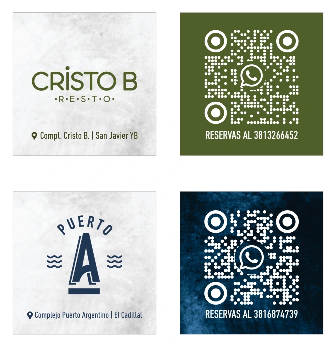
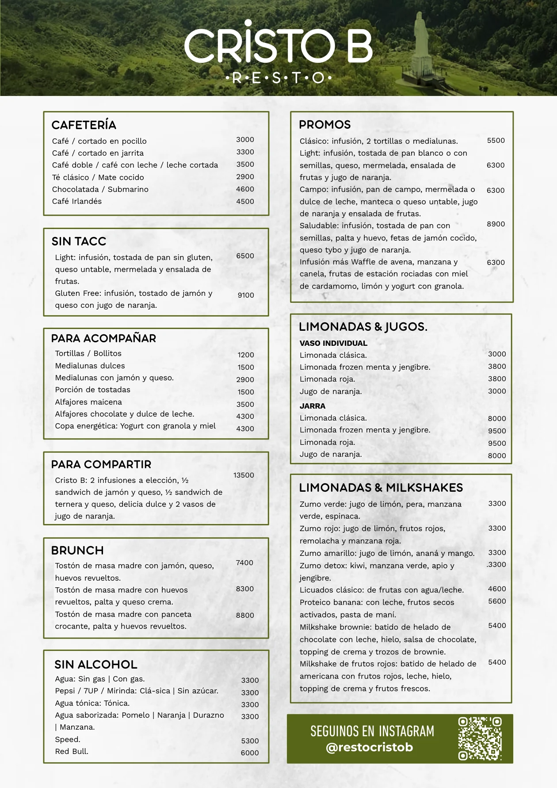
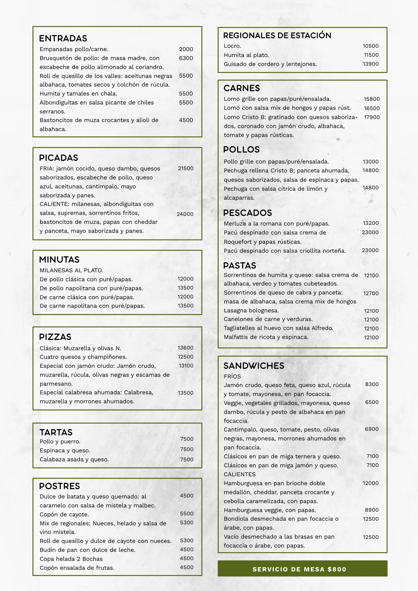
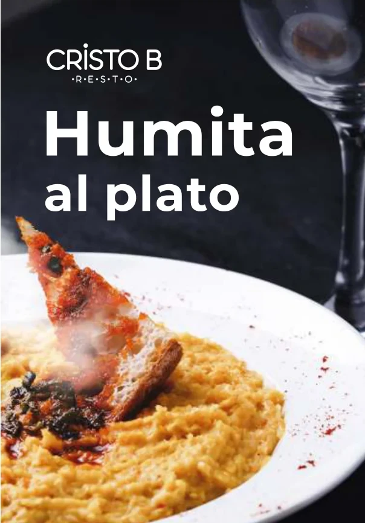
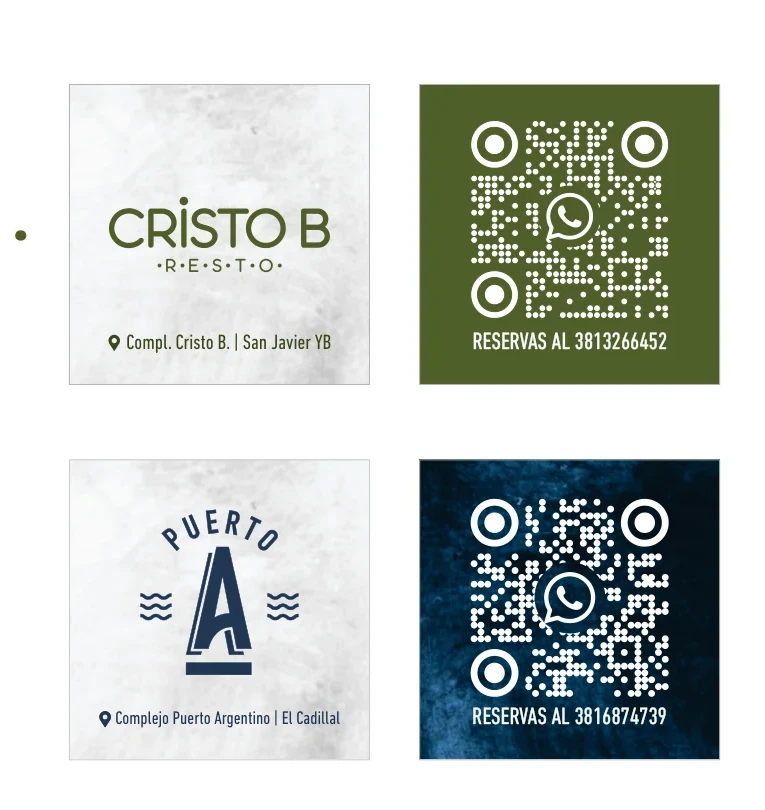

QUE SE ENTIENDA.
Orden de categorías y jerarquías tipográficas para cartas con muchas referencias gastronómicas.
CASO 16 / GASTRONOMÍA · EDITORIAL · APLICACIONES
Diseño para
cada punto de contacto.
Piezas gráficas para dos propuestas gastronómicas de Tucumán: comunicación de servicios, cartas, aplicaciones de mesa y soportes para acompañar la experiencia del cliente.
EXPLORAR PROYECTO
00 / EL DESAFÍO
Una carta o un portacódigo QR no son solo recursos decorativos: deben ayudar al cliente a recorrer opciones, distinguir categorías y encontrar información importante. El valor del diseño se encuentra en esa combinación de identidad, legibilidad y uso cotidiano.
Orden de categorías y jerarquías tipográficas para cartas con muchas referencias gastronómicas.
Materiales pensados para mesas, consulta de menú y comunicación directa con el público.
Conservar el contexto gráfico de cada negocio sin tratarlos como una sola marca ni adjudicar una identidad nueva sin evidencia.
01 / TRABAJOS
El archivo de Cristo B incluye múltiples revisiones de cartas, portacódigos QR, materiales promocionales, tarjetas y un voucher. En Puerto Argentino se encontró una pieza compartida de comunicación que permite mostrar la relación entre ambos trabajos, con alcances distintos.
Organización de una carta amplia: cafetería, brunch, regionales, platos principales, bebidas y otras familias. Varias versiones documentan la actualización de contenidos.
Portacódigos y materiales asociados a mesas identificadas. Una aplicación que conecta el soporte impreso con la consulta digital del menú.
Tarjetas, vouchers y comunicación vinculada con ambas propuestas gastronómicas. Los documentos de archivo se presentan como trabajos gráficos, sin afirmar resultados comerciales.
02 / CRITERIO EDITORIAL
La documentación de Cristo B reúne una oferta extensa. Su presentación necesita categorías reconocibles y una arquitectura de lectura estable, incluso cuando los platos y precios cambian de una edición a otra.
Cafetería, acompañamientos, brunch y propuestas para compartir.
Entradas, platos regionales, carnes, pastas, pizzas y otras categorías.
Limonadas, jugos, licuados y demás opciones de la carta.
El cuadro es un resumen de categorías extraído del documento, no una reconstrucción visual de una página real. Las muestras originales conservan algunos precios y datos de contacto históricos de 2024–2025: son únicamente archivo gráfico, no información comercial vigente.
MUESTRAS DOCUMENTALES / TRABAJOS ORIGINALES
Selección de páginas y aplicaciones extraídas de los archivos originales de diseño. Se muestran como antecedentes profesionales, conservando su apariencia gráfica original.




Material de archivo: fechas, precios, promociones, direcciones, redes sociales y códigos QR impresos pertenecen a ediciones anteriores y no deben interpretarse como vigentes. Las muestras no implican autoría de logotipos ni resultados comerciales.
03 / ESTADO Y AUTORÍA
Este caso representa principalmente diseño editorial y aplicaciones gráficas: cartas, piezas de mesa y material comercial. La carpeta de trabajo conserva archivos editables de CorelDRAW y exportaciones PDF que permiten rastrear revisiones. La presencia de un logotipo en el proyecto no prueba por sí sola su creación.
Alcance: diseño editorial y revisiones de cartas, materiales de mesa con QR y piezas comerciales. Las identidades originales, la gestión de los negocios y los resultados de ventas no se atribuyen al diseñador. Los materiales de archivo se presentan como antecedentes históricos, no como ofertas actuales.
16 / 17 · PORTFOLIO PERSONAL
Un caso de comunicación cotidiana: piezas que deben ser reconocibles, legibles y útiles en la experiencia gastronómica.